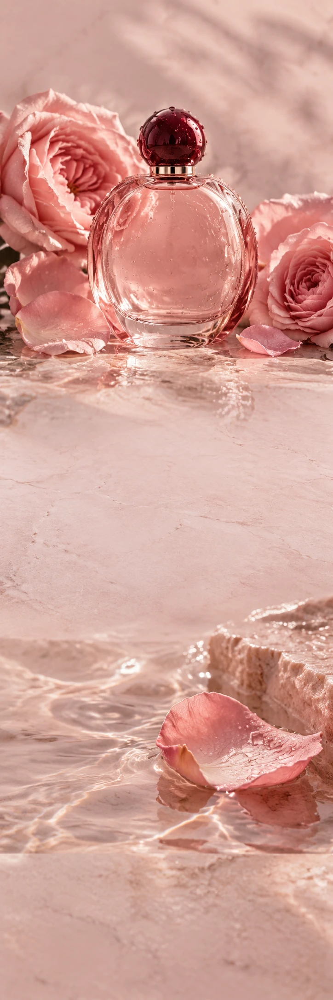

PETALS AFTER RAIN
ParfumBloemencampagne
PETALS AFTER RAIN / THE BLOOM EDIT
Na de regen.
Alles open.
Een bloem die liever haar eigen verhaal vertelt.
Roos ontmoet een frisse groene opening en een zachte basis. Een bloemig geurconcept met ruimte om iets onverwachts te laten groeien.
Ontdek het geurverhaalBloei op
jouw manier.
Een bloem die liever haar eigen verhaal vertelt.
Ontdek het geurverhaal